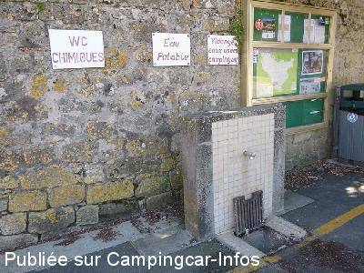

ASN = Aire de services avec stationnement nuit possible de :
LA REOLE
(N° 682)
Accès/adresse :
Avenue Gabriel Chaigne
33190 LA RÉOLE
33190 LA RÉOLE
Latitude : (Nord) 44.58084° Décimaux ou 44° 34′ 51′′
Longitude : (Ouest) -0.03023° Décimaux ou 0° 1′ 48′′
Tarif : 2015
Nuitée : 4 €
Services gratuits
Type de borne : Artisanale
Services :


Tous commerces
Poubelles
Autres informations :
Ouvert toute l'année
6 emplacements
GSM : +33(0)620 319 812
entredeuxmers@wanadoo.fr
Le 18/05/2014 par Fanfan
Le 18/05/2014 par Fanfan
Le 18/05/2014 par Fanfan
Le 18/05/2014 par Fanfan
Le 18/05/2014 par Fanfan

Le 18/05/2014 par Fanfan
de
FONTLOY
le 17/08/2012 :
§
BOF! la nationale +le train , ce n'est pas l'idéal pour dormir.4€ à payer pour pas grand chose .
§
BOF! la nationale +le train , ce n'est pas l'idéal pour dormir.4€ à payer pour pas grand chose .
de
eiffel33
le 25/06/2012 :
Attention, les mercredi jeudi et vendredi aucunes places de disponibles car les voitures les occupes pour se rendre au loto à la salle des fêtes toute proche, de plus cette aire est située entre la nationale 1113 et la voie ferrée et donc pas calme du tout, préférez Fontet à trois km au calme et en sécurité avec tous services!!!
Attention, les mercredi jeudi et vendredi aucunes places de disponibles car les voitures les occupes pour se rendre au loto à la salle des fêtes toute proche, de plus cette aire est située entre la nationale 1113 et la voie ferrée et donc pas calme du tout, préférez Fontet à trois km au calme et en sécurité avec tous services!!!
de
HERVE
le 01/05/2012 :
30/04/12
attention par fortes pluies,stationnement sur l'herbe,le terrain devient instable,risque de patinage voir embourbement
30/04/12
attention par fortes pluies,stationnement sur l'herbe,le terrain devient instable,risque de patinage voir embourbement
de
eiffel
le 19/02/2012 :
impraticable les jours de lotos soit du mercredi au samedi, même l'aire de vidange est skaté par les voitures!!!!
Messieurs les élus! réagissez!
impraticable les jours de lotos soit du mercredi au samedi, même l'aire de vidange est skaté par les voitures!!!!
Messieurs les élus! réagissez!
de
andsyl
le 04/12/2011 :
§
4 euros du 1 er juin au 30 septembre, parking en cours de modification, sera réservé aux campings cars
§
4 euros du 1 er juin au 30 septembre, parking en cours de modification, sera réservé aux campings cars
de
eiffel
le 31/05/2011 :
Nouveau tarif 2011 4€50 sans aménagement suplémentaires!
Nouveau tarif 2011 4€50 sans aménagement suplémentaires!
de
albatroce
le 25/09/2010 :
Aire en non stabilisé, de nombreux trous non rebouchés. Les 4€ servent à quoi ?
Aire en non stabilisé, de nombreux trous non rebouchés. Les 4€ servent à quoi ?
de
eiffel
le 30/11/2009 :
Robinet sans pas de vis pour le remplissage et à poussoir, la vidange pour les WC est obsolète et sale, préférez Fontet à 2 km au calme, en bordure de lac.
Robinet sans pas de vis pour le remplissage et à poussoir, la vidange pour les WC est obsolète et sale, préférez Fontet à 2 km au calme, en bordure de lac.
de
andsyl
le 02/11/2008 :
Parking de nuit payant du 15 avril au 1er octobre: 4€, pas d'électricité.
Parking de nuit payant du 15 avril au 1er octobre: 4€, pas d'électricité.
de
herve 74
le 04/09/2008 :
Il est impossible de faire les vidanges, arbre qui vous gêne pour manoeuvrer!
Il est impossible de faire les vidanges, arbre qui vous gêne pour manoeuvrer!
de
Loïc
le 05/04/2008 :
Tarif cher pour la qualité des services, trop bruyant. Les WC sont ceux de la salle des fêtes.
Tarif cher pour la qualité des services, trop bruyant. Les WC sont ceux de la salle des fêtes.
de
PENA 33
le 23/10/2006 :
Le Musée automobile, militaire, etc a fermé ses portes le 30 Septembre 2006.....
Le Musée automobile, militaire, etc a fermé ses portes le 30 Septembre 2006.....